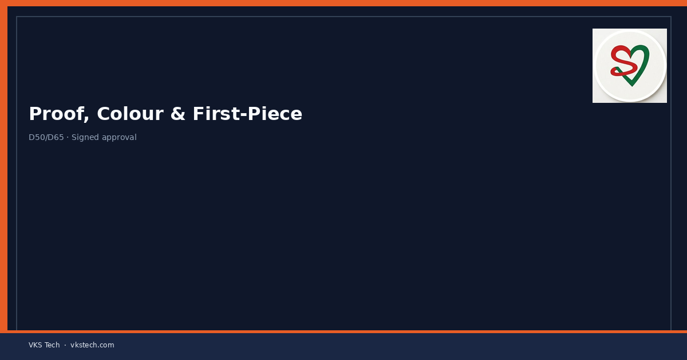
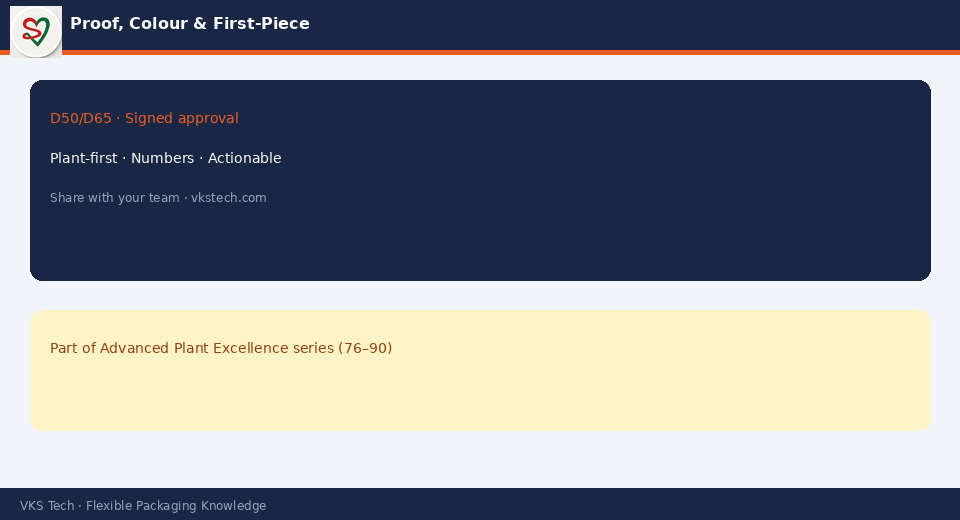

🎨 First-Piece Colour Approval Is the Gate That Protects the Whole Run. Skipping It or Approving Casually Creates Expensive Rejections Later
📖 11-min read · Colour & Quality · Quality + Print Operators + PPC
Colour is one of the first things the customer notices and one of the hardest to recover once the job is running. A disciplined first-piece (or first-roll) colour approval process — against the approved proof or standard — prevents long runs of off-shade material and the arguments that follow. Treating it as optional or “we will adjust later” is one of the most expensive habits in a converting plant.
- Approve against the signed proof or master standard under agreed lighting
- Use density / Delta E instruments where available; visual alone is risky for critical brands
- Record who approved, time, and any adjustments made
- If the proof is old or the substrate changed, re-validate before full speed
- Never “run and adjust later” on brand-critical work

1. Why First-Piece Colour Matters
Once the machine is at speed and hundreds of metres are on the rewind, correcting colour becomes costly: waste, downtime, and sometimes a full re-run. A short, disciplined approval at the start protects the entire job. It also creates a clear ownership point — the person who signed the first piece owns the colour decision for that run.
2. Practical Approval Checklist
- Proof or master standard is available and in good condition
- Lighting conditions match the agreed standard (or instrument is used)
- All colours and register are checked on the first piece / first few metres
- Density or Delta E readings (where used) are within tolerance
- Approval is signed or logged before the machine goes to production speed
- Any deviation is either corrected and re-approved or escalated
3. Common Weak Points
| Weak practice | Better practice |
|---|---|
| “Looks close enough, start” | Formal check against proof / numbers |
| No record of who approved | Name, time and any adjustments logged |
| Old or damaged proof used | Current, controlled standard only |
| Substrate or ink change ignored | Re-validate when inputs change |
Put the first-piece colour approval into the standard print start-up sequence and the job card. It is one of the highest-leverage quality gates in the plant.
🎨 फर्स्ट-पीस कलर अप्रूवल वह गेट है जो पूरी रन की रक्षा करता है। इसे छोड़ना या हल्के में लेना बाद में महंगे रिजेक्शन पैदा करता है
📖 11-मिनट पढ़ें · कलर & क्वालिटी · क्वालिटी + प्रिंट ऑपरेटर + PPC
रंग उन पहली चीजों में से है जो ग्राहक नोटिस करता है और एक बार जॉब चलने के बाद ठीक करना सबसे मुश्किल होता है। अनुशासित फर्स्ट-पीस (या फर्स्ट-रोल) कलर अप्रूवल प्रक्रिया — स्वीकृत प्रूफ या स्टैंडर्ड के खिलाफ — ऑफ-शेड मटेरियल की लंबी रन और उसके बाद के विवादों को रोकती है।
- सहमति प्रकाश में साइन किए गए प्रूफ या मास्टर स्टैंडर्ड के खिलाफ अप्रूव करें
- जहाँ उपलब्ध हो डेंसिटी / Delta E इंस्ट्रूमेंट इस्तेमाल करें
- कौन अप्रूव किया, समय और कोई एडजस्टमेंट रिकॉर्ड करें
- प्रूफ पुराना हो या सब्सट्रेट बदला हो तो फुल स्पीड से पहले फिर से वैलिडेट करें